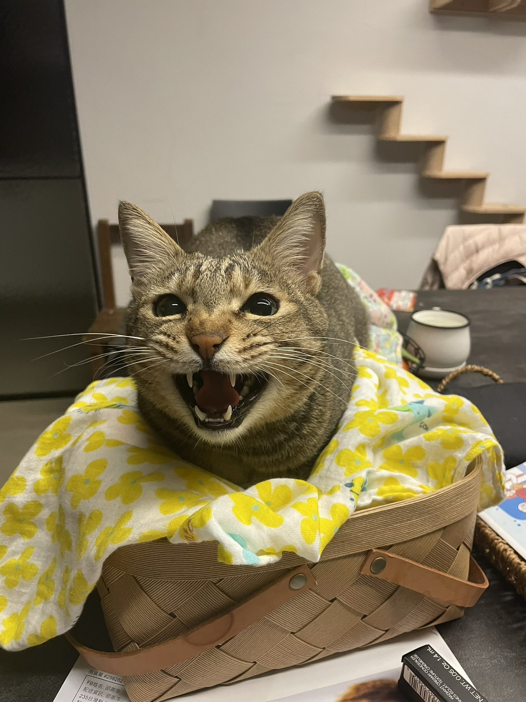
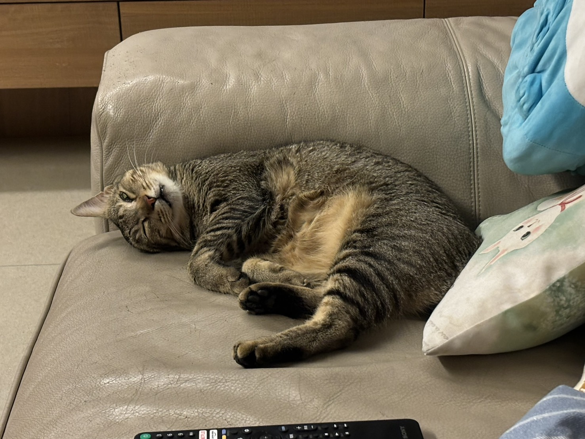
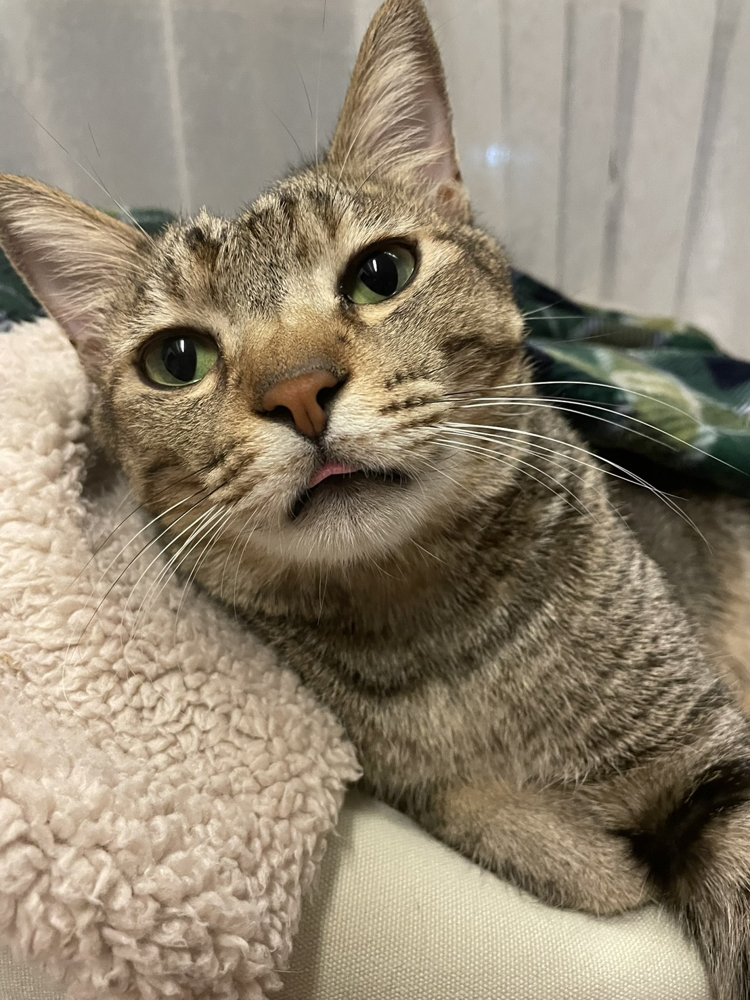
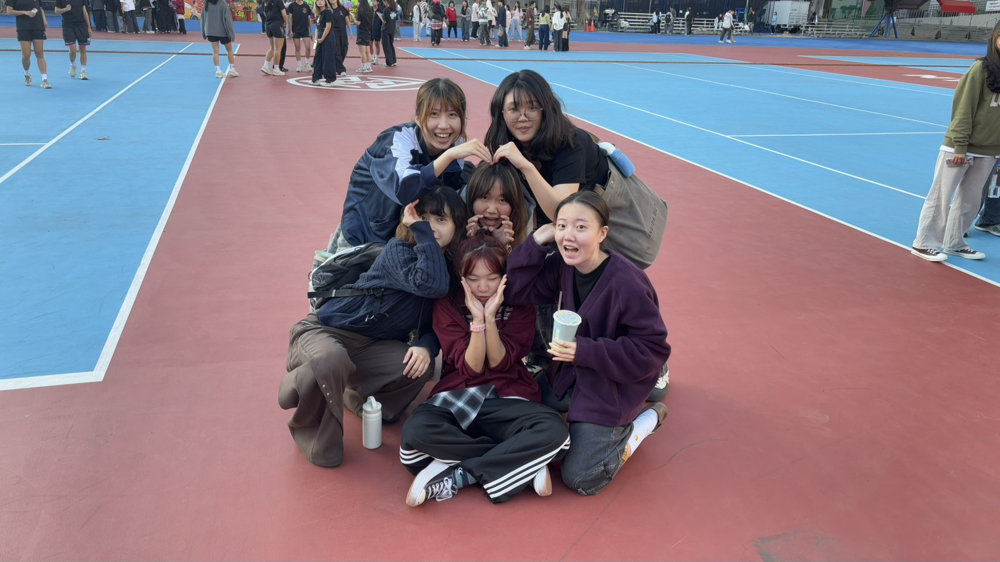
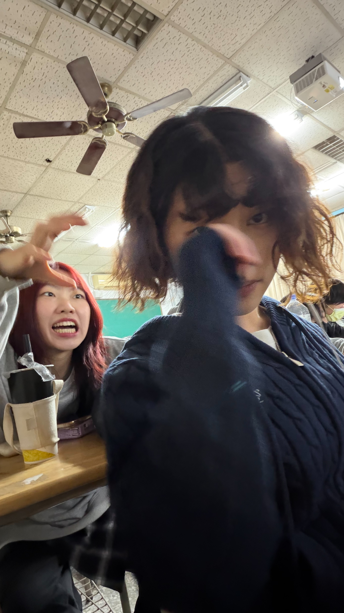
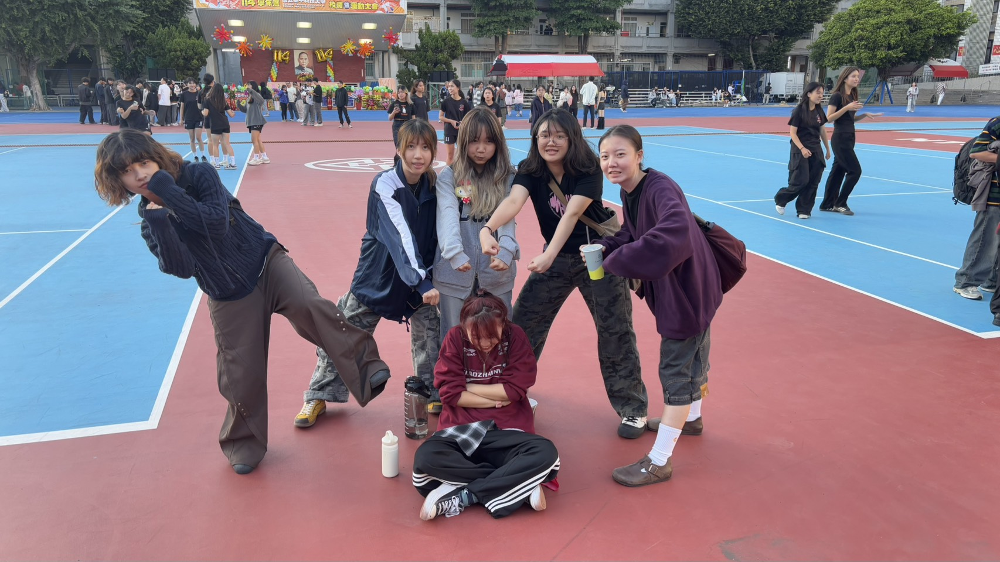
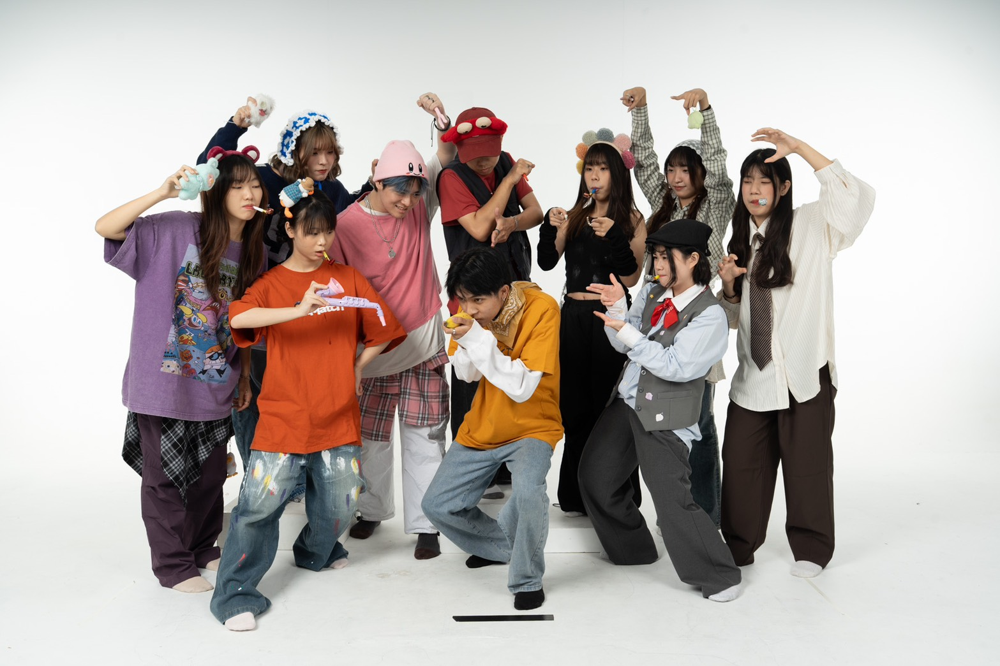
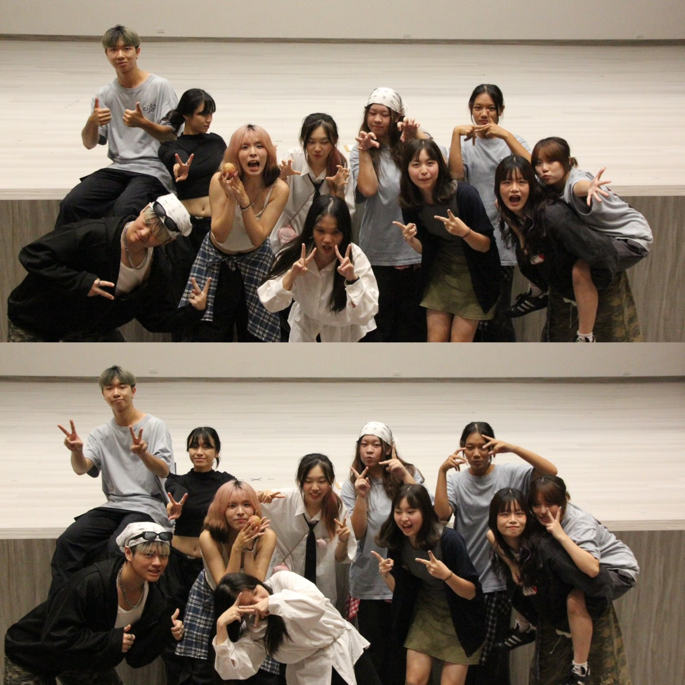
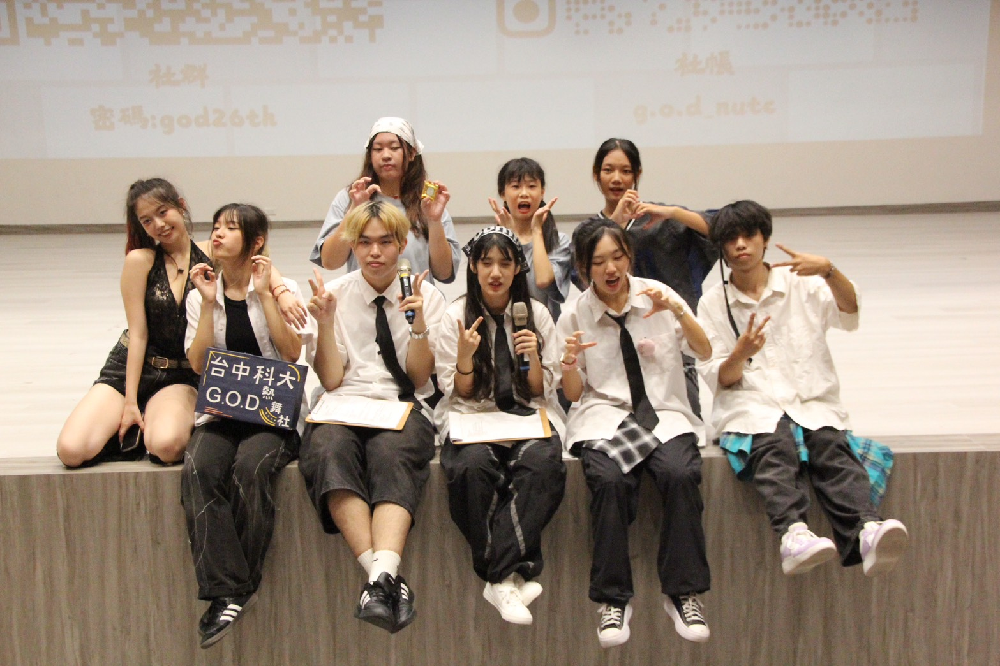
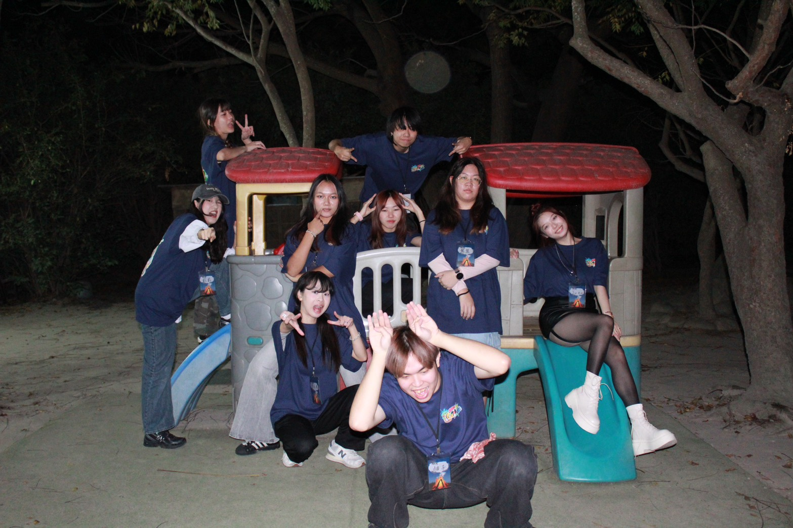

個人介紹
大家好，我是劉宣之，可以叫我莫妮卡或康阿吉。目前就讀多媒體設計系。
平時對創作與表達類型的事物特別有興趣，像是舞蹈、影像或設計相關內容，也喜歡透過不同形式記錄想法與情緒。
在學習過程中，我希望自己不只是完成要求，而是能理解背後的意義，並嘗試把學到的東西實際應用出來。
未來也期許自己能持續累積經驗，在探索興趣的同時，慢慢找到適合自己的方向。



這是我家的貓，他叫小兔，但我都叫他建偉



這是我在班上的朋友們



這是我在熱舞社的朋友們

中科熱舞26屆期末舞展5/22在活動中心音樂廳，歡迎來看我們表演歐!